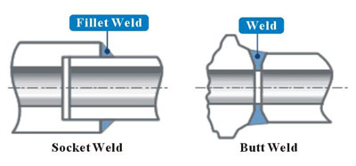

Valve connections can be welded into a piping system to prevent the possibility of leaks. Welded valve connections are typically used in high-temperature and high-pressure systems such as chemical processing, where there is zero room for error caused by leaks. This is generally considered a permanent installation as the valve will need to be desoldered in order to be removed from the plumbing.
There are two primary weld variations which are used in piping systems, butt and socket welds. These have been introduced below.
The valve end and the pipe end are of equal diameters. The outer edge of each is chamfered to create a "valley" to be filled with welding material. The two pieces are welded around the rims.
The valve has a socket with an inner diameter that is ever so slightly larger than the pipe's outer diameter. The pipe is inserted into the socket and is welded around the rim. The gap formed between the socket and the pipe, and the vibration of the pipe may make the joint fatigue, so the use of socket welding is limited. Socket weld connections are usually reserved for smaller sizes, typically 2" (DN50) and below.